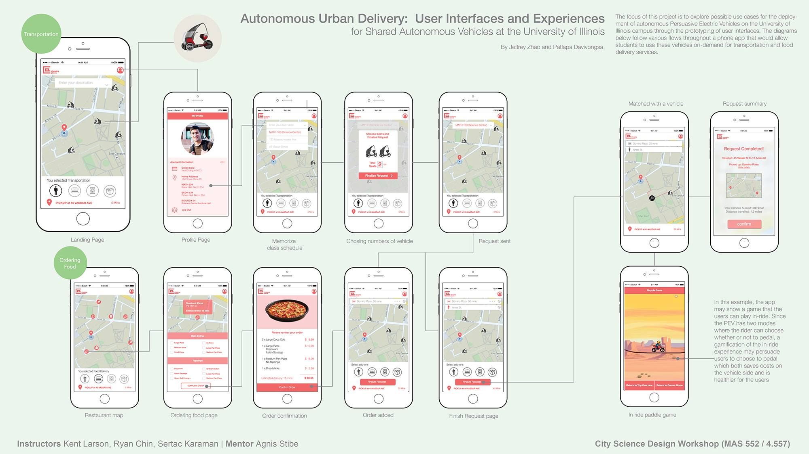

An mobile application and user experience design prototype for an autonomous urban delivery system on university campases. The PEV that was designed by the Changing Places group from the MIT Media Lab was used as the vehicle for this system.
Created by: Pat Davivongsa and Jeffrey Zhao
☻ ☻ ☻

- - - - - - - - - - - - - - - - - - - - - - -